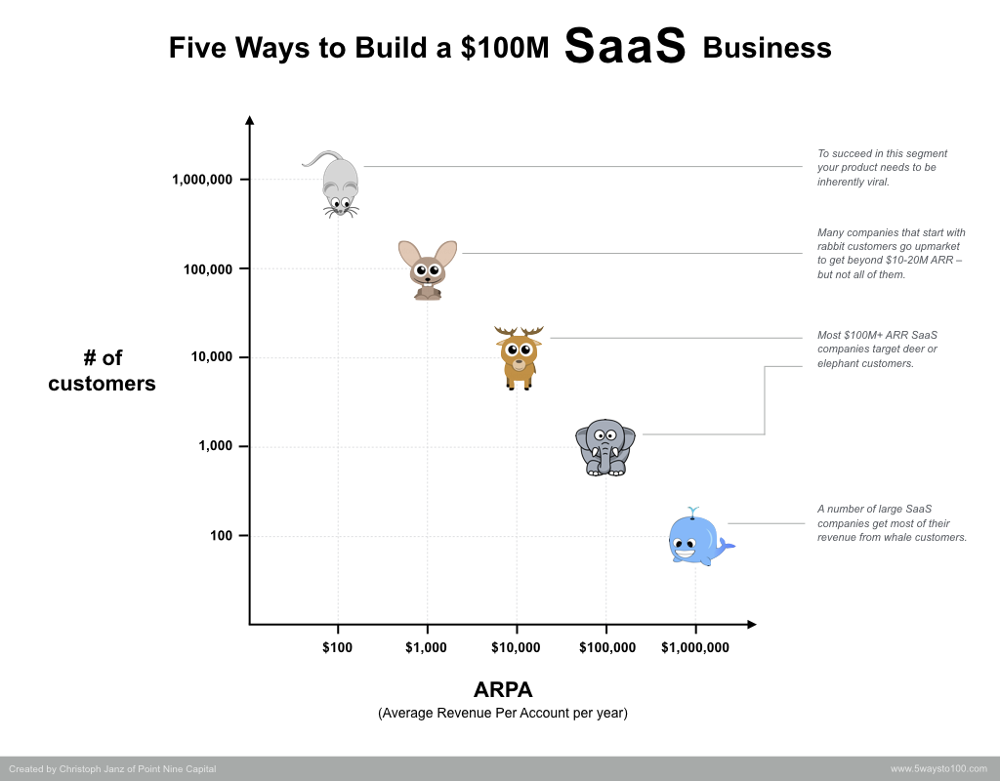

SaaS 101: Software as a Service Model explained
Posted on March 26, 2022 in Business
I wrote this article to introduce friends and colleagues to the subscription business model of Software as a Service (SaaS) companies.
This article contains a brief introduction to SaaS businesses, an overview of the key metrics of the subscription model and an explanation of the unit economics.
What is a SaaS company?
SaaS companies sell software hosted on-cloud or on-premise to customers willing to pay for its usage on a recurrent basis (e.g. monthly, yearly).
Some examples of SaaS companies are Netflix, Spotify, Hubspot, Jira, Slack, Zoom, Twilio, Manatal.
Different Types of SaaS
B2B SaaS VS B2C SaaS
You will often hear the distinction between B2B SaaS and B2C SaaS:
- B2B SaaS: SaaS companies selling to businesses (e.g. Hubspot CRM, Manatal Recruitment Software, Atlassian Jira Project Management tools, Github etc.)
- B2C SaaS: SaaS companies selling to consumers (e.g. Spotify, Netflix, etc.)
Some SaaS companies are selling to both consumers and businesses with usually different plans.
B2B Enterprise SaaS VS B2B PLG SaaS
In the B2B SaaS, you will also often hear the distinction between Enterprise SaaS and PLG SaaS:
- Enterprise SaaS: B2B SaaS focusing on enterprise customers, typically large corporate. The cost of these solutions for the customer will be higher (e.g. a client would pay $10K-$1M or more per year). These companies will rely on a sales team to sell the software making sales cycles longer (e.g. 6 months from getting in touch with the client to implementing the solution). Enterprise SaaS also requires often a lengthy implementation.
- PLG SaaS: B2B SaaS focusing on small and medium-sized businesses. These companies rely on their product to sell usually by offering freemium plans or free trials. These companies tend to have smaller sales teams (or no sales teams) and focus their efforts on customer support and customer success.
Several SaaS companies will sell to both large corporates and small businesses. For instance, Gitlab sells contracts worth $100K+ to enterprise customers with on-premise hosting and will also offer a free or inexpensive plans to smaller businesses starting from $19 per month.
A more nuanced segmentation based on the average revenue per customer (ARPA) per year:
- Mice: ~ $100 / year per customer
- Rabbit: ~ $1,000 / year per customer
- Deer: ~ $10,000 / year per customer
- Elephant: ~ $100,000 / year per customer
- Whale: ~ $1,000,000 / year per customer
The chart below (by Christoph Janz from Point Nice Capital) shows how many customers a SaaS Business to reach ~100M ARR.

How do SaaS companies price their software?
Most SaaS companies will offer multiple pricing plans at different price points. Some will offer complex pricing with options to subscribe to separate products or features that a customer can pick a-la-carte (e.g. Intercom). Some others will keep it very simple with 2-3 plans.
The pricing model is usually based on the following 3 categories:
Fixed pricing
The customer pays a certain amount for using the software no matter how much he uses it. A good example would be Spotify, you pay $10/month whether you listen a lot to music or not.
Quantity based pricing
The customer pays an amount proportional to a certain number (# users, # projects, # etc.). A good example would be Jira by Atlassian, you pay $10/month per user for the basic plan.
The pricing is not always proportional to the quantity. Some solutions offer packaged pricing, volume pricing and graduated pricing.
Usage-based pricing
The customer pays an amount proportional to its usage of the software. A good example would be Twilio, your bill is proportional to the number of SMS you send.
What are the key metrics of a SaaS company?
Primary Metrics
Revenue
SaaS companies charge their customers for the usage of their software on a recurrent basis (e.g. monthly, annually). This allows SaaS companies to have more predictable revenue and less variance month over month.
Imagine the following case: Netflix stops acquiring new clients and stop losing existing clients. The number of customers will be the same and their revenue every month remains constant.
In comparison, another type of business will have relatively less predictable and more variable revenue.
For this reason, SaaS companies and investors will tend to focus on the monthly recurrent revenue (MRR) and annual recurrent revenue (ARR) instead of the revenue.
SaaS companies might charge their customers for non-recurrent services or one-offs (e.g. implementation cost) on top of the recurrent cost of the subscription. Usually, this revenue will be worth less than 10-20% of the recurrent revenue and its purpose is to cover the service cost (e.g. time spent by employees to deliver the implementation).
MRR and ARR
For SaaS businesses, MRR and ARR are key metrics that you will hear more often compared to revenue.
The relation between MRR and ARR is very simple: ARR = 12 x MRR.
If a company has 100 customers paying on average $50 per month, the MRR is equal to $5,000 and the ARR is equal to $60,000.
Customers
The total number of customers is also an important indicator. Think of the mice, rabbit, deer and elephant illustration above.
Derivatived metrics
ARPA, ARPU, APRC and ACV
Let’s start with some definitions:
- ARPA stands for Average Revenue per Account.
- ARPU stands for Average Revenue per User.
- ARPC stands for Average Revenue per Customer
- ACV stands for Average Customer Value.
These metrics can be used interchangeably. I like to use ARPA. The ARPA is defined as the sum of all your customer’s ARR (or MRR) divided by the number of customers. This can be confusing as some will use the MRR and others the ARR.
These 4 indicators indicate how large the average customer (business or consumer) pays.
Let’s take a simple example: If you have 100 customers and your total ARR is $60K, ARPA is $600.
Churn (Logo, Revenue)
We usually differentiate between 2 types of churn:
- Logo Churn: This metric evaluates the number of customers that you’ve lost compared to your total number of customers. We usually express this metric as a rate. Let’s say you have 100 clients and lose 5 clients this month, your monthly logo churn rate is 5%.
- Revenue Churn: How much MRR you’ve lost compared to your total MRR. Let’s say you have an MRR of $1M and lost 20K of MRR, your monthly revenue churn is 2%.
Churn is often compared to a hole in a leaky bucket. The water inside your bucket is your MRR. When you add water to your bucket, this is considered as a newly acquired revenue from acquisition and expansion.
The bigger the hole is, the harder it is to fill your bucket. Every SaaS business wants the hole in their leaky bucket to be as small as possible.
Customer Lifetime Value (LTV)
This metric represents how much a customer will spend with you during the entire time he uses your software.
Let’s say your average customer pay you $10 per month on average and use your solution for an average of 38 months. Your LTV is equal to $100 / month X 38 months = $3,800
This formula gives a rough estimate to evaluate the LTV: ARPA / Customer churn rate.
What are the Unit Economics of SaaS companies?
Investors tend to track a specific set of unit economics to evaluate a SaaS business’s performance.
Primary Units
MRR evolution: Acquisition, Expansion, Reactivation and Contraction
Acquisition (new MRR): When a new customer subscribes, we consider it a new subscription called acquisition. The acquisition will drive New MRR.
Expansion MRR: When an existing customer increases his MRR (e.g. upgrade plan), we speak of expansion.
Contraction MRR: When an existing customer decreases his MRR (e.g. downgrade plan), we speak of contraction.
Churn MRR: When an existing customer unsubscribes, we speak of churn.
Reactivation MRR: When a previously churned customer subscribes again, we speak of reactivation.
The MRR value evolves based on these 4 movements:
This month MRR = Last month MRR + (new MRR + expansion MRR) - (contraction MRR + churn MRR)
Cost of Acquisition (CAC)
The cost of acquisition (CAC) is the cost of acquiring a new client. If you spend this month $10,000 to acquire 50 new clients, your CAC is $200.
It is not always easy to estimate the cost of acquiring new clients and there is no standard defining what exactly should be included in the CAC.
The important thing is to agree with your partners on what to include in the cost of acquiring new clients and consistently measure it the same way.
Derivatived Units
LTV to CAC
Every SaaS business wants to maximize the customer lifetime value (LTV) and minimize the cost of acquisition (CAC). This is the reason the ratio LTV:CAC is important to watch.
A good ratio is 3:1, lower could mean that it cost you too much to acquire a client compared to how much the customer spends.
A high ratio (e.g. 5:1) is not ideal as it indicates that you are sacrificing growth. This ratio is open to debate and I will save this part for another day.
Net MRR Churn rate
Let’s imagine your SaaS business stops acquiring new customers. What would happen to your MRR? “Eventually, it will reach $0” is a wrong answer. The right answer is: It depends.
It depends on your Net MRR churn rate and more precisely on the following formula:
This month MRR = Last month MRR + expansion MRR - (contraction MRR + churn MRR)
If your expansion MRR is higher than your contraction and churn, you will keep growing without acquiring any new clients.
This is the reason investors speak about Net MRR churn rate, a normalized version of the formula above:
Net MRR churn rate = [(contraction MRR + churn MRR) - expansion MRR] / total MRR
The best performing SaaS businesses have a negative Net MRR churn rate.
Next
All these metrics tend to be tedious to compute, maintain and visualize in an Excel document. Multiple solutions can integrate into your payment gateway (e.g. Stripe) and construct all your metrics. A few that I have tested: